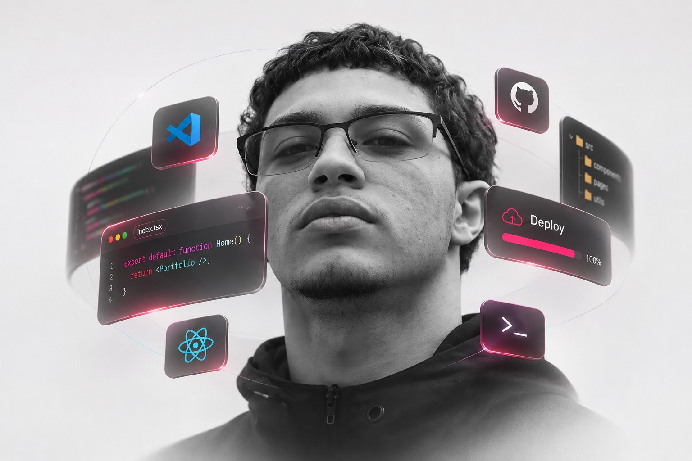

Prazer,
Riquelme.
Curiosidade para explorar.
Intenção para construir.
Minha trajetória passa pelo curso técnico em informática e pela criação de sites e aplicativos complexos. Gosto de transformar ideias em experiências que fazem sentido para quem usa.
Continuo aprendendo por meio de projetos e certificações de plataformas como Alura, Google e Microsoft. Cada trabalho é uma oportunidade de aproximar desenvolvimento, cuidado visual e solução de problemas.
No Aranhaverso, explorei animação e estilização. No ListaTarefas, transformei uma necessidade da minha rotina em aplicativo. No NexusFC, atuei como desenvolvedor full stack no TCC do curso.
Estou disponível para projetos freelance e aberto a oportunidades profissionais.
Vamos conversar